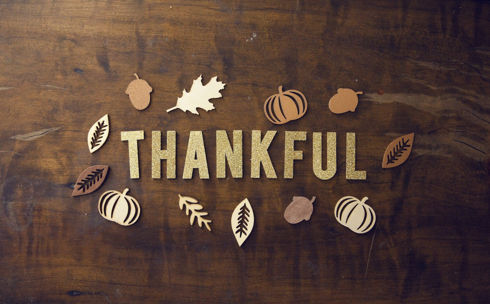
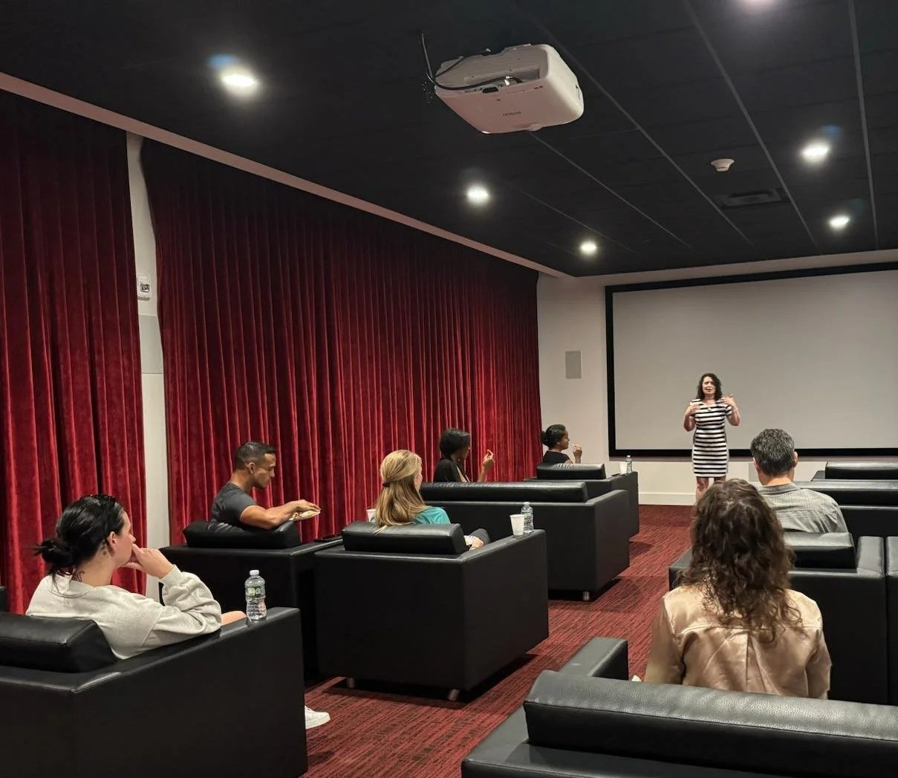

Healing & Spiritual Growth
Healing & Spiritual GrowthStaying Awake When Ordinary Life Keeps Going
May their memory always be a fuel for us.
Read BlogBlog
Thoughts on healing, spiritual life, work, and being human, written by Lisa Batitto with occasional guest contributions.
Browse
Blog
Healing & Spiritual GrowthMay their memory always be a fuel for us.
Read Blog Healing & Spiritual Growth
Healing & Spiritual GrowthI actually gave myself a break in December.
Read Blog Astrology & Guest Posts
Astrology & Guest PostsThe final supermoon of 2025 is brightening the sky this Thursday, Dec. 4, at 6:14 p.m.
Read Blog
Healing & Spiritual GrowthI’ve been focusing on the moments that truly stayed with me this month.
Read BlogA lot is swirling around right now.
Read Blog Healing & Spiritual Growth
Healing & Spiritual GrowthWhen Baristanet recently profiled me, what really stayed with me wasn’t the story about me.
Read Blog Astrology & Guest Posts
Astrology & Guest PostsWe’ve got another supermoon on our hands.
Read Blog Work, Burnout & Everyday Life
Work, Burnout & Everyday LifeThere’s a quiet but persistent pressure that many of us carry: the belief that we have to do everything and do it all perfectly.
Read BlogSometimes, people come into your life because you’re in the same chapter and not because you’re meant to be in the whole book.
Read Blog Astrology & Guest Posts
Astrology & Guest PostsBe careful not to butt heads with your loved ones when the full Harvest Supermoon takes to the skies on October 6, peaking at 11:48 PM EDT.
Read Blog
Healing & Spiritual GrowthWe talk a lot about manifestation in spiritual and wellness circles.
Read Blog Healing & Spiritual Growth
Healing & Spiritual GrowthLiving a spiritual life in a violent world can feel like a contradiction.
Read BlogServices
Learn about Reiki, Akashic Records, meditation, Work Trauma Coaching, and Corporate Wellness.
View Services